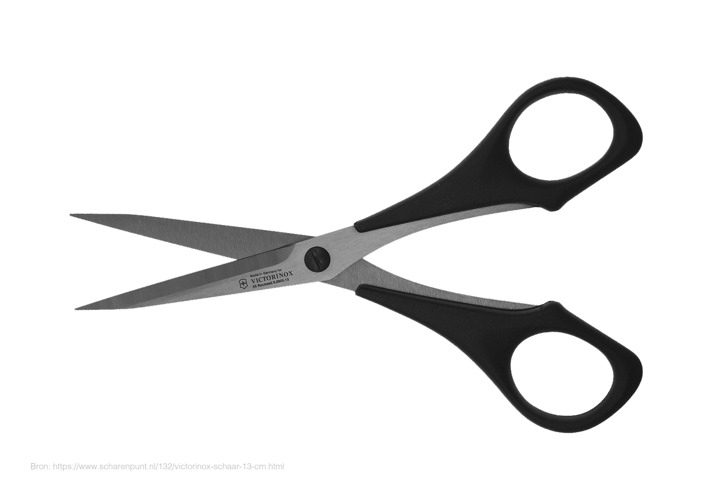
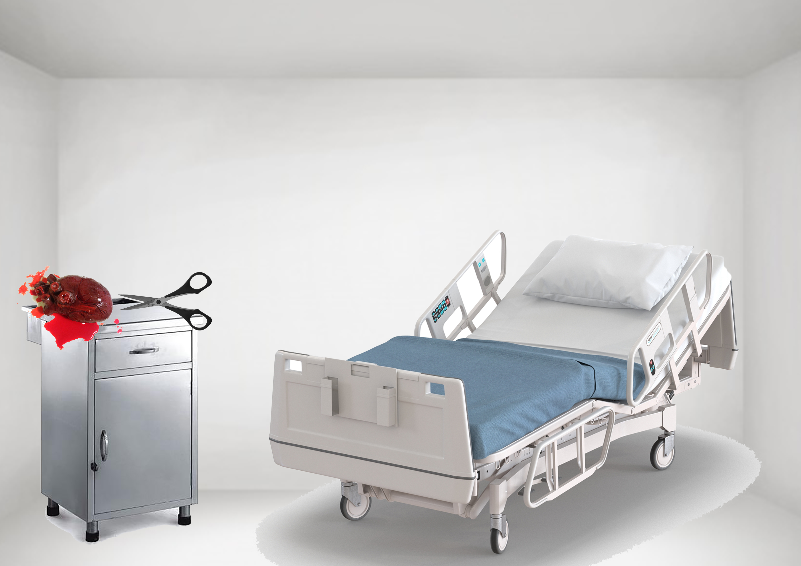
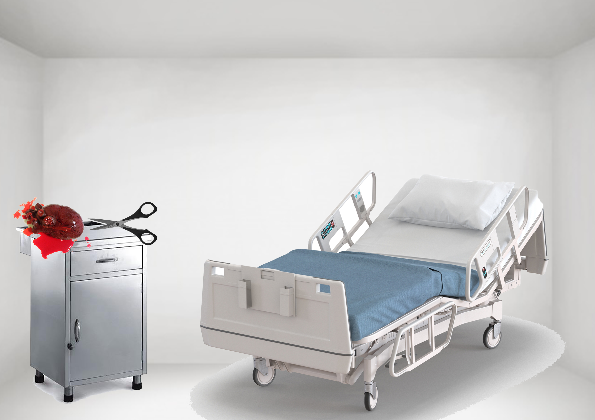
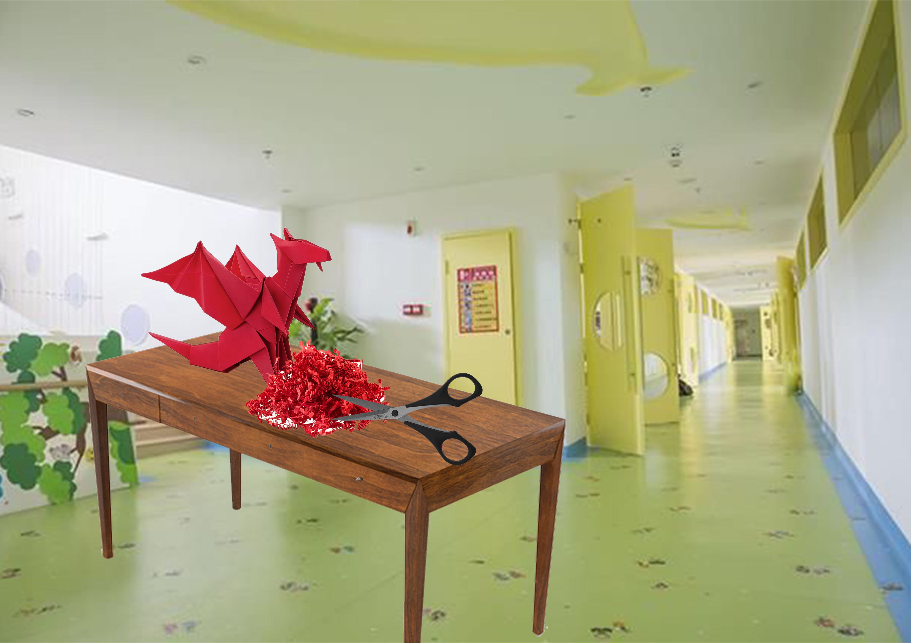
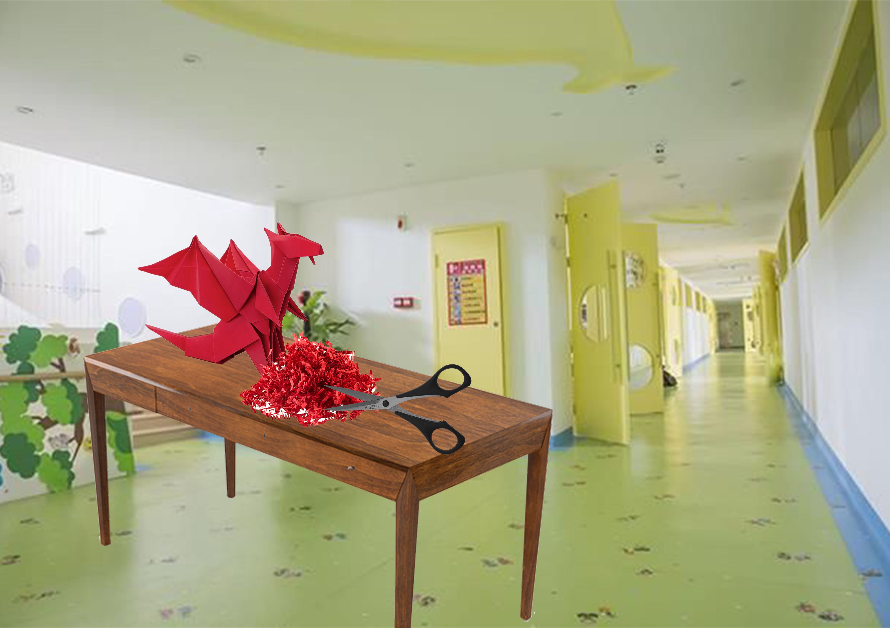
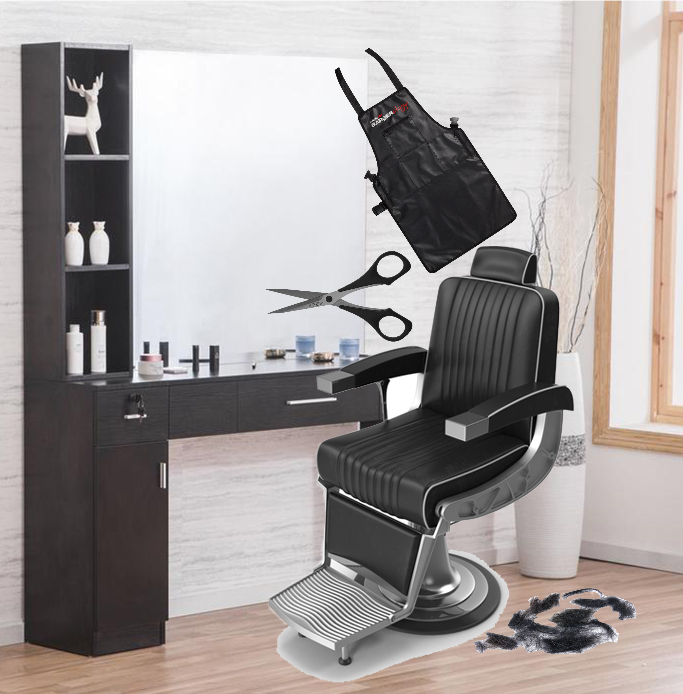
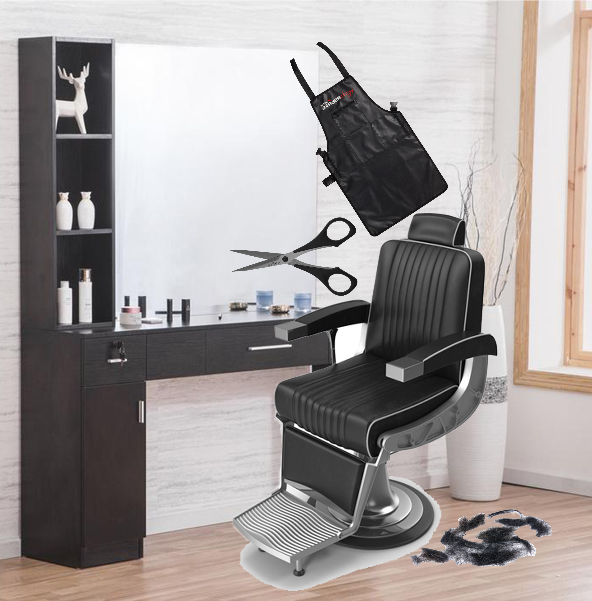
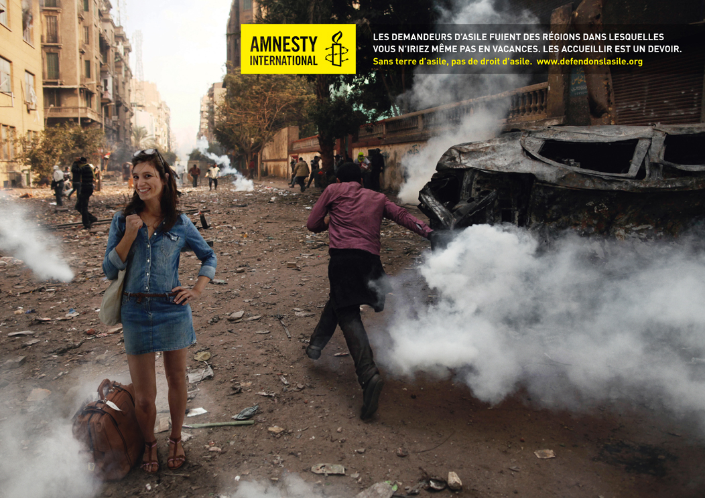

Beeldtaal
Het woord zegt het al, je leert hoe je als ontwerper naar een beeld kijkt. Er zijn manieren vanuit verschillende perspectieven om een beeld te bekijken en bestuderen.

Week 01 - Indexiale tekens
Opdracht: Object met uitgangspunt 'indexicale tekens'. Object schaar: Leek mij een interessante object omdat de mens hier dagelijks gebruik van maakt.”
 

In het beeld/ontwerp is er een operatie plaatsgevonden waarbij er gebruik is gemaakt van een schaar om de juiste organen te verwijderen.
 

In het beeld/ontwerp hebben kinderen/kleuters origami gemaakt. Hiervoor hebben ze gebruik gemaakt van een schaar(snippers) om een goede vorm in elkaar te krijgen.
 

In het ontwerp is er een klant naar de kapper geweest.
Week 02 - Retorica
Opdracht: Campagne uitkiezen en deze toelichten. De mensenrechtenorganisatie van Amnesty International Frankrijk hebben deze bewustwordingscampagne uitgebracht. Omdat door de jaren heen negatieve gebeurtenissen ontstonden zoals dreiging in het leven van gezinnen.

Week 03 - Eindresultaat
Een vrij opdracht om een belangrijke doel te visualiseren waar de mensen nog niet bij stil staan. Ik heb gekozen voor huiselijk kindergeweld omdat het nog steeds is in Nederland.